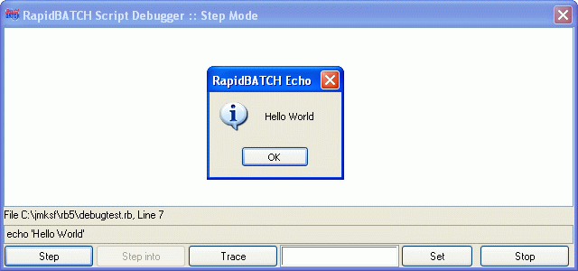

DEBUGMODE
DEBUGMODE
DEBUGMODE
DEBUGMODE
| Syntax: | DEBUGMODE mode |
| Description: | Sets the integrated RapidBATCH script-debugger to one of the three debug-modes. Possible parameter values are STEP for stepwise debugging, TRACE for trace-debugging, and NONE to switch the debugger off. Using this method, the debugger can be started directly in the script, e.g. at a critical position.  |
| Examples: | echo 'A debug test...' rem Start debugger debugmode step rem Let's execute the next instructon... echo 'Hello World' end |
| Remarks: | This statement is only included in the script-interpreter provided with RapidBATCH Professional Edition. DEBUGMODE is ignored by the compiler and is not provided in compiled scripts. You can also start the debugger by setting the environment variable RB_DEBUGMODE to one of the desired values BEFORE the RapidBATCH-script is executed. |